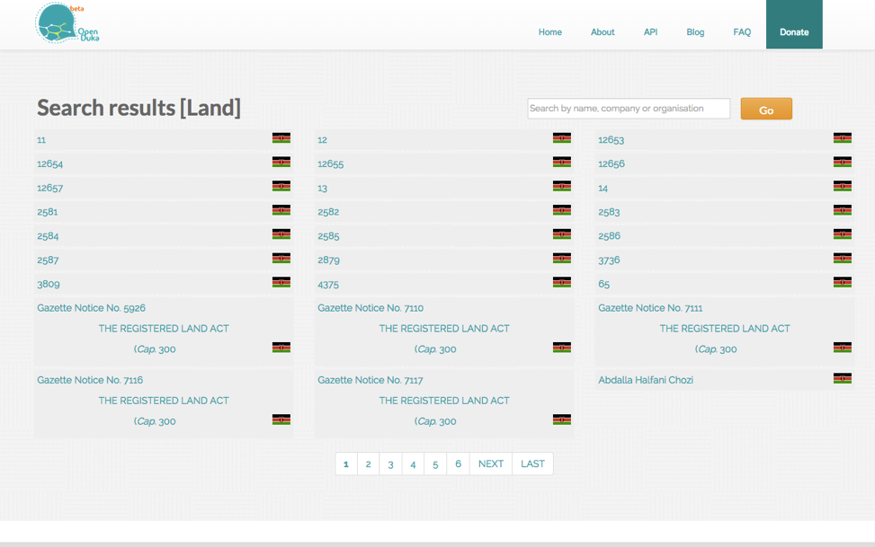

Corruption in Kenya
Corruption in Kenya is a major and by many indications worsening problem. In 2014, Transparency International ranked the country 145 (out of 175) in its annual Corruption Perceptions Index, down from 136 two years earlier.1 Recently, an official audit found that just 1 percent of government spending was properly accounted for.2 The average urban Kenyan pays 16 bribes a month.3 When Barack Obama visited the country in mid-2015, he warned of a “cancer of corruption” that was blighting the nation.4
Open Data and Technology in Kenya
Can open data – and technology more generally – offer a solution? Kenya is generally considered one of the most technologically advanced countries in Africa. As of 2014, Kenya had the fourth-highest Internet penetration rate in Africa with 21.3 million users, trailing only Nigeria, Egypt and South Africa.5 Also as of 2014, almost 80 percent of Kenyans who owned cell phones (around three-quarters of the population) used them for mobile payments and banking.6
The country had an early taste of open data’s potential in combating corruption in 2005. Dr. Bitange Ndemo, a lecturer on entrepreneurship and research methods at the University of Nairobi’s Business School, worked with then-President Mwai Kibaki’s government to uncover illicit allocation of government funds by mapping distributions of the Constituency Development Funds (CDF). CDFs were supposed to spur grassroots development and distribute resources equitably across the nation. The mapping exercise, built on previously closed data, showed that funds were heavily allocated to rich areas of the country over more deserving areas. Despite its promising results, however, this initial effort to use open data met with political opposition and was soon shut down.7 “[The politicians] were very angry with me,” Ndemo recalls, “and within a very short time, we pulled down the website.”8
In 2011, Ndemo, by then the Permanent Secretary of Information and Communications in the government, worked with a volunteer task force of technical personnel and World Bank officials to launch a new project – the Kenyan Open Data Initiative. The centerpiece of the initiative was the Kenyan Open Data Portal (https://opendata.go.ke/), the first comprehensive open data platform in sub-Saharan Africa (and the second in Africa, after Morocco’s). The portal hosts over 400 data sets from across the government, including data from the national census, data pertaining to national and regional expenditure, and information on key public services such as education, health and agriculture.
Determining whether the broad Kenyan Open Data Initiative, and the Data Portal in particular, had any impact is difficult given conflicting signals. On the one hand, the portal’s 44 million page views as of August 2015, for example, point to a widely used, impactful platform. Even more important than the number of page views, Linet Kwamboka, the Open Data project coordinator, announced that users have interacted with the data found on the portal – through downloads and embeds – 2.6 million times.9
That being said, prior to these milestones, critics questioned how well the information available on the platform was targeted to the needs of users. For example, a 2014 survey of relevant users found that approximately 50 percent of desired education data does not exist on the portal.10 The lack of many types of potentially useful data is not surprising when considering the number of government departments that have not yet opened their data. As of 2015, four years after the portal’s official launch, the site has only received data from 26 of over 83 government departments.11

Figure 1: Kenya’s Open Data Portal
The political and legal climate in Kenya also remains somewhat ambiguous when it comes to open data. In 2013, President Uhuru Kenyatta was elected as the fourth president of Kenya. His Jubilee Party’s election manifesto had “pledged to increase transparency in government as well as promote information-sharing within public institutions.”12 The manifesto also highlighted the importance of improved digitization of government, including “cleaning up and managing databases that will be stored in a secure and centralized location and which can be accessed and used by all ministries and branches of government … to make government more efficient.”13
All of this led to hopes among open data and government transparency activists. Immediately following that initial optimism, hopes began to deflate. In 2013, the Sunlight Foundation published an article on “why Kenya’s open data portal is failing.” Many of the reasons cited – like government’s reluctance to open all potentially useful data and challenges related to the country’s constitutional devolution – created similar issues for Open Duka, as discussed below. It is worth noting, however, that much has changed for the portal since 2013, and even at the time, the piece’s author still expressed reasons for longer-term optimism.14 The situation surrounding the open data portal isn’t helped by the absence of a legal framework to enforce a constitutionally guaranteed freedom of information. Although the Bill of Rights includes this freedom, in fact there are no clear guidelines to guide how public bodies should make information available, what types of information should be released, and what remedies exist for violations. With that said, the surge in use of the portal – culminating in the milestones in site visits and data downloads witnessed in 2015 – is a lesson in the need for both iteration and persistence in order for open data efforts to take hold.
Read MoreEven as the government has launched its open data initiatives, civil society in Kenya has become increasingly active in the field. According to Jay Bhalla, director of the Open Institute, a civil society organization that works “to open up government to the citizens,” the government’s own open data initiative “acted as a catalyst for organizations [like the Open Institute] to begin working around open data.”15 He cites the example of Code4Kenya, which works to catalyze demand for open data by embedding fellows with data skills into African newsrooms and civic organizations, as an example, stating that it was at least in part “spun out of the fact that there was the Kenya Open Data Initiative.”
Open Duka (“duka” means “shop” in Swahili) grew out of this civil society interest in open data. Launched in 2014, it contains data pertaining to the relationships among Kenyan institutions, individuals and other entities with an impact on public life. The project is driven by the Open Institute in partnership with the National Council of Law Reporting, with funding from the African Technology & Transparency Initiative.
Open Duka is built on a simple principle: Its founders believe that giving citizens information that enables them to draw connections among individuals and organizations can uncover and possibly remedy many instances of corruption. Al Kags, a founding trustee of the Open Institute, notes that every time a new corruption scandal hits Kenya, citizens begin asking questions about connections. Who is connected to whom? Who owns the companies involved, and how do those individuals relate to government entities or other power players? Prior to Open Duka, he says, there was no way to uncover this type of “relational data,” which can “enable citizens to make connections between people, issues, companies and public organizations.”16
Open Duka’s Mission Statement: “Providing citizens, journalists, and civic activists with a practical and easy-to-use tool to understand the ownership structure of the world they live in, demonstrating the practical applications of open information for normal citizens.”
The platform does not itself seek to draw any connection; it just posts data, relying on its users’ investigative skills (and serendipity) to draw out the links that underlie public life in Kenya, and that often drive corruption. As Bhalla puts it: “We’re just getting all the data that is out there … and we’re putting it up there for people to make their decisions. … We’re just getting the data, scraping it, putting it up, and seeing what connections come up … and what stories can then be taught.”17
Kags cites the following hypothetical example of how Open Duka might be used. Using the platform, a citizen could discover that Individual A is the director of two companies; she could then uncover the fact that Individual A’s brother directs a third company, and also happens to work with a government agency; in addition, the citizen might determine that both brothers went to school with Judge C.18 In this way, the citizen-user of Open Duka could possibly determine whether Individual A has used his connections (via the brother or the judge) to improperly benefit from government contracting, or engage in any other form of corruption.19
At its core, Open Duka is a platform that enables citizens to peer behind the veil of previously unknown (and unknowable) relationships that drive a variety of economic and political activities, including land purchases, tendering contracts and other regulatory decisions. When selecting a person, organization, tender, contract, court case or piece of land on the site, Open Duka provides a simple visualization of how that entity connects with others found on the platform, with additional categorized data about each entity found in the visualization displayed below. These relationships, adds Kags, “have an impact on the integrity of a country.”20

Figure 2: Visualization of an Organization’s Connections found on Open Duka
Data Sources
As of August 2015, Open Duka includes information on 30,955 people, 3,832 organizations, 1,800 tenders, 226 contracts, 22,011 court cases and 4,418 pieces of land.21 The user can search across each of these six areas from a simple search bar on the main page, or enter into the platform by clicking on one of the six categories of content, at which point she is presented with a long, searchable, alphabetical list of relevant entities.

Figure 3: Land Use Information Hub on Open Duka
Increased transparency around land records is seen as a particularly important piece of Open Duka’s value proposition. The goal is to allow individuals to draw connections between land parcels (where illicit funds are often parked) and entities or individuals who might not be direct owners but nonetheless have connections to the owners of the land. In addition, Open Duka’s organizers have also taken steps to include information not just on governmental stakeholders, but also private corporations. This data is often harder to access, but it is essential to drawing the necessary connections. Thus, Open Duka comprises data related, for example, to contract information, tender information and company directors (including whether the directors are involved in any court cases and whether they own land). Kags notes that Open Duka’s focus expands beyond government because “if you don’t know what a company, civil society organization, school, etc. is doing, you don’t know what they’re doing wrong and you have no way to add value.”22
While some of this information originates from publicly available government databases, Open Duka’s organizers also employ a number of additional measures to supplement the information and make their databases more comprehensive. In particular, Open Duka scrapes a considerable amount of information from the media, particularly from the Kenyan Gazette (which contains near-comprehensive information on land transfers and purchases). Prior to Open Duka’s launch, the Gazette had partnered with Google to digitize all its editions; however, while the information was accessible in digital format, it was not categorized or searchable in any meaningful way. So Open Duka’s organizers approached the government and asked them for access to the digital archives of the Gazette, which was then imported into the platform.
Despite Open Duka’s ingenuity in sourcing data from nonobvious sources, the project has in general struggled to cope with the insufficiency of available data. This lack of data is not unique to Kenya, however. Improvements to transparency regarding the beneficial ownership of legal entities – i.e., business owners, shareholders and senior managing officials – was a high-level principle arising from the 2014 G20 Summit in Australia, in the interest of “preventing the misuse of these entities for illicit purposes such as corruption, tax evasion and money laundering.”23 Despite official governmental enthusiasm for releasing data, its organizers say, the reality is often quite different. Bhalla cites the case of the Ministry of Lands, where much information still remains inaccessible due to stonewalling or vested interests, even though it is more or less completely digitized. The same is true of many other departments. As he puts it: “When you’re doing anything around government transparency and accountability, the doors often get shut to people trying to get the data.”24
Read MoreLearn about our methodology
Read Next
Mexico’s Mejora Tu Escuela
Uruguay's A Tu Servicio
Openaid In Sweden
Open Contracting And Procurement In Slovakia
Indonesia’s Kawal Pemilu
Denmark’s Open Address Data Set
Opening Canada’s T3010 Charity Information Return Data
United Kingdom's TheyWorkForYou
United Kingdom's Open Public Services Network
United Kingdom's OpenCorporates
Battling Ebola in Sierra Leone
New Zealand's Christchurch Earthquake Clusters
Singapore's Dengue Cluster Map
United States' Eightmaps
Kennedy vs. the City of Zanesville, United States
United Kingdom's Coeliac UK and Brandbank
United Kingdom's Ordnance Survey OpenData
United States' New York City Business Atlas
United States' NOAA: Opening Up Global Weather Data in Collaboration with Businesses
United States Opening GPS Data for Civilian Use
United Kingdom's Transport for London
United Kingdom's HM Land Registry Price Paid Data
Reference
2http://www.businessinsider.com/afp-corruption-in-kenya-worse-than-ever-says-veteran-campaigner-2015-8?IR=T
3http://www.ucl.ac.uk/dpu-projects/drivers_urb_change/urb_governance/pdf_trans_corrupt/TI_Corruption_kenya.pdf, p. 7.
4Loeb, Saul. “Barack Obama urges Kenya to fight corruption in government.” Daily Nation. July 26, 2015. http://www.nation.co.ke/news/Fight-corruption-from-the-top-Obama/-/1056/2809526/-/2y8ovu/-/index.html
6Gilpin, Lyndsey. “The world’s unlikely leader in mobile payments: Kenya.” TechRepublic. March 20, 2014.
http://www.techrepublic.com/article/the-worlds-unlikely-leader-in-mobile-payments-kenya/
7Mutuku, Leonida and Christine M. Mahihu. “Open Data in Developing Countries – Understanding the Impacts of Kenya Open Data Applications and Services.” iHub Research. 2014. http://www.opendataresearch.org/sites/default/files/publications/ODDC%20Report%20iHub.pdf
8GovLab Interview with Dr. Bitange Ndemo, Chairman Open Institute. September 9, 2015.
9Mutegi, Lilian. “Kenya Open Data Portal Hits 44 Million Page VIews.” All Africa. August 18, 2015. http://allafrica.com/stories/201508190752.html.
10Mutuki, Leonida, Christine M. Mahihu, Dr. Raed Sharif. “Exploratory Study on the Role and Impact of Kenyan Open Data Technology Intermediaries.” iHub Research. April 30, 2014. http://www.opendataresearch.org/sites/default/files/publications/ODDC%20Report%20iHub.pdf
11Ochieng, Lilian. “Kenya: State Agencies Hold Firmly to Their Data.” AllAfrica. August 19, 2015. http://allafrica.com/stories/201508200439.html.
12H.E. President Uhuru Kenyatta. “The Harmonised Jubilee Coalition Manifesto.” http://www.scribd.com/doc/123569244/The-Harmonised-Jubilee-Coalition-Manifesto#scribd.
13H.E. President Uhuru Kenyatta. “The Harmonised Jubilee Coalition Manifesto.” http://www.scribd.com/doc/123569244/The-Harmonised-Jubilee-Coalition-Manifesto#scribd.
14Brown, Greg. “Why Kenya’s open data portal is failing – and why it can still succeed.” Sunlight Foundation. September 23, 2013. https://sunlightfoundation.com/blog/2013/09/23/why-kenyas-open-data-portal-is-failing-and-why-it-can-still-succeed/.
15GovLab Interview with Jay Bhalla, Executive Director of the Open Institute Trust. August 12, 2015.
16GovLab Interview with Al Kags, Founder Open Institute. March 4, 2014. https://www.youtube.com/watch?v=GYfovn5TQpI.
17 GovLab Interview with Jay Bhalla, Executive Director of the Open Institute Trust. August 12, 2015.
18 GovLab Interview with Al Kags, Founder Open Institute. March 4, 2014. https://www.youtube.com/watch?v=GYfovn5TQpI.
19 GovLab Interview with Al Kags, Founder Open Institute. March 4, 2014. https://www.youtube.com/watch?v=GYfovn5TQpI.
20 GovLab Interview with Al Kags, Founder Open Institute. March 4, 2014. https://www.youtube.com/watch?v=GYfovn5TQpI.
22 GovLab Interview with Al Kags, Founder Open Institute. March 4, 2014. https://www.youtube.com/watch?v=GYfovn5TQpI.
23 “G20 High-Level Principles on Beneficial Ownership Transparency.” G20.org. December 2014. https://g20.org/wp-content/uploads/2014/12/g20_high-level_principles_beneficial_ownership_transparency.pdf
24 GovLab Interview with Jay Bhalla, Executive Director of the Open Institute Trust. August 12, 2015.
25 GovLab Interview with Jay Bhalla, Executive Director of the Open Institute Trust. August 12, 2015.
26 GovLab Interview with Dr. Bitange Ndemo, Chairman Open Institute. September 9, 2015.
27 Walker, Emily. “And the Honesty Oscars go to…” One.org. February 23, 2015. http://www.one.org/us/2015/02/23/and-the-honesty-oscars-go-to/.
28 GovLab Interview with Dr. Bitange Ndemo, Chairman Open Institute. September 9, 2015.
29 GovLab Interview with Dr. Bitange Ndemo, Chairman Open Institute. September 9, 2015.
30 GovLab Interview with Jay Bhalla, Executive Director of the Open Institute Trust. August 12, 2015.
32 Mutegi, Lilian. “Kenya Open Data Portal Hits 44 Million Page Views.” All Africa. August 18, 2015. http://allafrica.com/stories/201508190752.html.
33 GovLab Interview with Jay Bhalla, Executive Director of the Open Institute Trust. August 12, 2015.
34 GovLab Interview with Jay Bhalla, Executive Director of the Open Institute Trust. August 12, 2015.
35 GovLab Interview with Jay Bhalla, Executive Director of the Open Institute Trust. August 12, 2015.
36 GovLab Interview with Jay Bhalla, Executive Director of the Open Institute Trust. August 12, 2015.
37 GovLab Interview with Jay Bhalla, Executive Director of the Open Institute Trust. August 12, 2015.
38 GovLab Interview with Jay Bhalla, Executive Director of the Open Institute Trust. August 12, 2015.
39 GovLab Interview with Jay Bhalla, Executive Director of the Open Institute Trust. August 12, 2015.
40 GovLab Interview with Jay Bhalla, Executive Director of the Open Institute Trust. August 12, 2015.
41 GovLab Interview with Jay Bhalla, Executive Director of the Open Institute Trust. August 12, 2015.
42 GovLab Interview with Dr. Bitange Ndemo, Chairman Open Institute. September 9, 2015.
43 GovLab Interview with Al Kags, Founder Open Institute. March 4, 2014. https://www.youtube.com/watch?v=GYfovn5TQpI.
Special thanks to Akash Kapur who provided crucial editorial support for this case study, and to the peer reviewers who provided input on a pre-published draft.